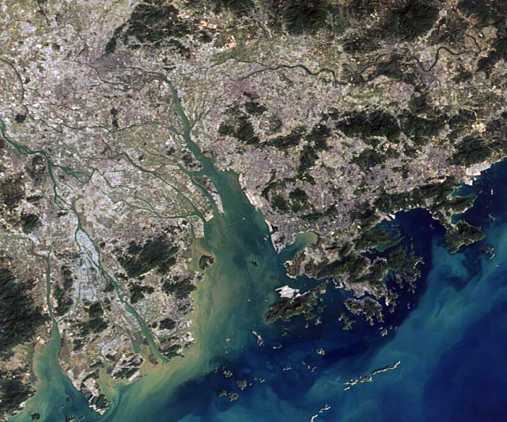

Une métropole de plus de 18 millions d'habitants sur le delta de la rivière des Perles, face à Hong Kong, née en 1980 de la première zone économique spéciale de Chine. Le laboratoire de l'ouverture chinoise, passé en quarante-cinq ans de l'atelier d'assemblage au premier pôle d'innovation du monde, et désormais en première ligne de la rivalité technologique avec les États-Unis.
Shenzhen n'est pas une croissance spontanée : c'est une expérience de l'État chinois. En 1980, Deng Xiaoping y ouvre une zone économique spéciale collée à Hong Kong pour attirer capitaux et techniques. Le territoire passe de 314 000 habitants en 1979 à 18,25 millions fin 2025.
2
De l'atelier au laboratoire
D'abord usine d'assemblage pour Hong Kong et le monde, la ville est devenue celle de Huawei, Tencent, BYD et DJI. Elle consacre 6,67 % de son PIB à la recherche, et son pôle avec Hong Kong et Canton est le premier du monde pour l'innovation.
3
Un front de la rivalité sino-américaine
Ses champions sont les cibles des sanctions américaines depuis 2018, et ses exportations subissent les droits de douane. Signe de son rang, c'est à Shenzhen que la Chine reçoit les dirigeants de l'APEC les 18 et 19 novembre 2026.
02
La carte commentée
Cliquez sur un numéro pour lire le repère.

Image : NASA Worldview, MODIS Terra, 28 janv. 2025
Dix repères
Shenzhen occupe la rive est de l'estuaire, face à Hong Kong. En jaune, la frontière ; en blanc, le pont vers Zhuhai et Macao.
La frontière et le pont sont tracés de façon schématique. EVP : équivalent vingt pieds, l'unité de mesure des conteneurs.
03
Comprendre
Cinq temps pour passer de la carte à l'analyse.
IDu district de Bao'an à la zone spéciale
Avant 1979, le territoire de Shenzhen est le district rural de Bao'an, collé à la colonie britannique de Hong Kong. Son chef-lieu, le bourg de Shenzhen, compte quelque 30 000 habitants, et tout le territoire environ 314 000. Ses habitants fuient régulièrement par milliers, à la nage ou par les collines, vers Hong Kong, où l'on gagne beaucoup plus. La dernière grande vague de cette « grande évasion » date de 1979.
Le choix de ce lieu n'a rien d'un hasard. Après la mort de Mao, Deng Xiaoping lance en décembre 1978 la politique de réforme et d'ouverture. Pour attirer capitaux et techniques sans ouvrir tout le pays, il crée des enclaves aux règles propres. Le 31 janvier 1979, Pékin autorise la compagnie hongkongaise China Merchants à aménager une zone industrielle à Shekou ; en mars, le district devient la ville de Shenzhen. Le 26 août 1980, le comité permanent de l'Assemblée nationale populaire approuve le règlement des zones économiques spéciales du Guangdong : Shenzhen, Zhuhai et Shantou. Xiamen, dans le Fujian, suit à l'automne.
La zone de Shenzhen ne couvre d'abord que 327,5 km², au sud. À partir de 1982, une clôture de plus de 80 km, la « deuxième ligne », la sépare du reste de la Chine : il faut un permis pour y entrer. Les chantiers vont si vite qu'on parle de « vitesse de Shenzhen » : en 1984, la tour du Centre du commerce international gagne un étage tous les trois jours. Les conservateurs du Parti dénoncent pourtant une enclave capitaliste. Deng tranche après sa visite.
« Le développement et l'expérience de Shenzhen prouvent que notre politique de création des zones économiques spéciales est juste. »
Deng Xiaoping, inscription datée du 26 janvier 1984 (notre traduction)
Le mythe du village de pêcheurs
Les discours officiels répètent que Shenzhen était un « petit village de pêcheurs ». L'architecte et historienne Juan Du a montré que c'est un mythe : le territoire avait des bourgs, des marchés, des siècles d'histoire et des liens anciens avec Hong Kong. Le récit d'une ville surgie de rien sert surtout à glorifier les réformes.
IIL'usine du monde, avec Hong Kong
Les premiers investisseurs viennent de l'autre côté de la frontière. Étouffés par la hausse des salaires et des loyers, les industriels de Hong Kong déplacent leurs ateliers à Shenzhen, puis à Dongguan. C'est le modèle « boutique devant, usine derrière » : Hong Kong conçoit, finance et exporte ; le delta assemble. Jouets, textile, montres et électronique partent vers l'Amérique et l'Europe. La Bourse de Shenzhen ouvre en décembre 1990.
Après la répression de Tiananmen, en 1989, les réformes semblent menacées. En janvier 1992, Deng, alors âgé de 87 ans, fait sa tournée dans le Sud et s'arrête à Shenzhen. Il y défend l'audace des réformes ; le Parti adopte la même année l'« économie socialiste de marché ». L'adhésion à l'OMC, en 2001, fait du delta l'atelier de la planète.
Cette usine repose sur des millions de migrants. Le hukou, le permis de résidence chinois, les maintient dans un statut de travailleurs de passage, logés en dortoirs ou dans les villages urbains. Le taïwanais Foxconn, installé à Shenzhen dès 1988, y bâtit à Longhua une ville-usine de plusieurs centaines de milliers d'ouvriers. En 2010, une vague de suicides parmi ses jeunes employés attire l'attention du monde sur les cadences et la vie des dagongmei. La même année, la zone spéciale est étendue à toute la ville.
IIIDe la copie à l'innovation
Shenzhen n'en est pas restée à l'assemblage. Dans les années 2000, le marché d'électronique de Huaqiangbei devient la capitale du shanzhai : des téléphones copiés, puis modifiés, vendus par millions dans les pays du Sud. Cette culture de l'imitation rapide forme des ingénieurs, des sous-traitants et un réseau de fournisseurs sans égal. La presse anglophone parle de « Silicon Valley du matériel » : une idée d'objet devient un prototype en quelques jours.
Surtout, la ville voit naître ses champions. Huawei (1987) et ZTE (1985) dans les télécoms, Tencent (1998) dans l'internet, BYD (1995) dans les batteries puis l'automobile, DJI (2006) dans les drones. En 2025, BYD a vendu 2,25 millions de voitures 100 % électriques, devant Tesla, et la ville a produit 7,45 millions de drones civils. Dès 2017, tous ses bus publics roulent à l'électricité.
Cette montée en gamme a un moteur : la recherche. En 2024, Shenzhen y consacre 6,67 % de son PIB, plus que la Corée du Sud ou Israël et plus de deux fois la moyenne chinoise, et les entreprises en assurent plus de 93 %. En 2025, la ville a déposé 19 660 demandes de brevets internationaux (PCT). Depuis 2025, l'OMPI classe le pôle Shenzhen-Hong Kong-Canton au premier rang mondial des pôles d'innovation, devant Tokyo-Yokohama ; il l'est resté en septembre 2026. Shenzhen a remonté la courbe du sourire : de l'assemblage vers la conception et la marque.
Un modèle introuvable ailleurs ?
Le succès tient à une combinaison rare : un État qui expérimente et investit, la proximité de Hong Kong, un immense bassin de main-d'œuvre, puis un écosystème de fournisseurs concentré dans un rayon d'une heure. Les centaines de zones spéciales créées depuis dans le monde, de l'Afrique à l'Inde, l'ont rarement reproduit.
IVUne métropole dans la Grande Baie
Shenzhen est devenue une métropole de rang mondial. Sa population est passée de 7 millions en 2000 à 18,25 millions fin 2025, avec la plus forte hausse des villes chinoises cette année-là, et c'est la plus jeune des grandes villes du pays : 3,2 % seulement de plus de 65 ans au recensement de 2020. Son PIB, 3 873 milliards de yuans en 2025, dépasse celui de Hong Kong depuis 2018. Son port, avec les terminaux de Yantian, Shekou et Chiwan, est le 4e du monde, signe de la littoralisation de l'économie chinoise.
La ville s'inscrit dans une région urbaine plus vaste. Publié le 18 février 2019, le plan de la Grande Baie Guangdong-Hong Kong-Macao veut faire des neuf villes du delta, de Hong Kong et de Macao une seule mégalopole : plus de 87 millions d'habitants en 2024 et environ 15 000 milliards de yuans de PIB en 2025. Ponts et lignes rapides se multiplient : le pont Hong Kong-Zhuhai-Macao en 2018, la liaison Shenzhen-Zhongshan en 2024.
Avec Hong Kong, le rapport s'est inversé. L'ancienne vitrine du capitalisme est désormais la petite voisine, reprise en main par Pékin depuis la loi sur la sécurité nationale de 2020. Les deux villes coopèrent pourtant : à Qianhai, agrandie en 2021, et sur la boucle de Lok Ma Chau, où se construit un parc scientifique commun. Le « un pays, deux systèmes » se lit à la frontière.
La ville à deux vitesses
Fin 2024, 64,9 % des habitants de Shenzhen n'avaient pas le hukou de la ville. Beaucoup vivent dans les villages urbains, comme Baishizhou (environ 150 000 habitants sur moins d'un km²), rasés les uns après les autres par la gentrification. Le slogan municipal « Si tu viens, tu es Shenzhenois » dit l'accueil ; le prix du logement, la sélection.
VEn première ligne de la guerre technologique
Les succès de Shenzhen en font une cible. En avril 2018, Washington interdit aux entreprises américaines de vendre des composants à ZTE, qui ne survit qu'en payant une amende d'un milliard de dollars. Le 1er décembre 2018, la directrice financière de Huawei, Meng Wanzhou, est arrêtée au Canada. En mai 2019, Huawei est placé sur l'Entity List : privé de puces avancées et des services de Google, il voit ses ventes de téléphones s'effondrer.
La riposte passe par l'autonomie technologique. En 2023, Huawei lance un téléphone équipé d'une puce gravée en Chine par SMIC. En 2025, ses dépenses de recherche atteignent 192,3 milliards de yuans, 21,8 % de son chiffre d'affaires. Les sanctions ont aussi accéléré l'essor de ses fournisseurs chinois. Fin décembre 2025, la FCC interdit à son tour la vente de nouveaux modèles de drones étrangers, à commencer par ceux de DJI.
La guerre commerciale pèse aussi. En 2025, les exportations de Shenzhen ont reculé de 2,6 %, mais celles de produits de haute technologie ont progressé de 10,1 %. La trêve conclue à Busan le 30 octobre 2025 a ramené les droits américains sur les produits chinois autour de 47 % ; après la visite de Donald Trump à Pékin en mai 2026 et celle de Xi Jinping à Washington en septembre, elle court jusqu'au 10 janvier 2027. Les 18 et 19 novembre 2026, Shenzhen accueille le sommet des dirigeants de l'APEC : la ville-laboratoire devient la vitrine de la Chine face au monde.
Ce que cela change
Shenzhen montre les deux visages de la puissance chinoise : une capacité d'innovation désormais mondiale, mais une dépendance persistante aux marchés extérieurs et à quelques technologies clés, comme les machines de gravure des puces les plus fines. La ville est à la fois l'arme et le point faible du découplage.
04
Les chiffres
Les données clés, datées et sourcées.
18,25 Md'habitants fin 2025, contre 314 000 sur le même territoire en 1979Bureau des statistiques de Shenzhen, mai 2026
3 873 Md¥de PIB en 2025 (environ 557 milliards de dollars), devant Hong Kong depuis 2018Bureau des statistiques de Shenzhen, 2026
6,67 %du PIB consacré à la recherche en 2024, le taux le plus élevé des villes chinoisesMunicipalité de Shenzhen, déc. 2025
35,4 M EVPde conteneurs en 2025 : le 4e port du monde, près de trois fois Hong KongBureau des statistiques de Shenzhen, 2026
Une ville sortie de terre en une génération
Population résidente du territoire de Shenzhen, en millions d'habitants
Sources : Bureau des statistiques de Shenzhen (1979, fin 2025, bulletin publié le 25 mai 2026) ; recensements de 2000, 2010 et 2020. En rose, le dernier chiffre connu.
Les plus grands ports du monde
Conteneurs traités en 2025, en millions d'EVP
Sources : DynaLiners, cité par Container News, août 2026 ; Hong Kong : gouvernement de Hong Kong, mars 2026. En 2004, Hong Kong (22 M EVP) devançait encore nettement Shenzhen (13,6 M).
Une majorité sans hukou
Habitants de Shenzhen fin 2024, sur 100
Sans hukou de la ville : 65Avec hukou de la ville : 35
Source : Bureau des statistiques de Shenzhen, bulletin 2024 (publié en mai 2025) : 11,68 millions de résidents non enregistrés sur 17,99 millions, soit 64,9 %. Sans hukou local, l'accès à l'école publique, au logement social et à certaines aides reste limité.
05
Qui veut quoi ?
Six acteurs, leurs intérêts et leurs moyens.
🇨🇳Pékin et la municipalité
Ce qu'ils veulent
Faire de Shenzhen la vitrine du modèle chinois et le moteur de l'autonomie technologique du pays.
Moyens et limites
Zones spéciales, foncier, crédits publics et fonds d'investissement. Mais l'immobilier ralentit et l'investissement a chuté de 21,7 % en 2025.
🇭🇰Hong Kong
Ce qu'elle veut
Rester la place financière et le port international du delta, et profiter du dynamisme de sa voisine.
Moyens et limites
Droit britannique, bourse, dollar de Hong Kong. Mais son port décline et son autonomie politique s'est réduite depuis 2020.
📱Les champions de la tech
Ce qu'ils veulent
Huawei, Tencent, BYD et DJI veulent conquérir les marchés mondiaux et maîtriser leurs technologies.
Moyens et limites
Recherche massive (192,3 milliards de yuans pour Huawei en 2025). Mais sanctions et méfiance occidentale leur ferment des marchés.
👷Les migrants
Ce qu'ils veulent
Un emploi mieux payé qu'au village, puis un logement, une école pour leurs enfants, le hukou de la ville.
Moyens et limites
Ils sont près des deux tiers des habitants. Mais le hukou et le prix des logements limitent leur installation.
🇺🇸Les États-Unis
Ce qu'ils veulent
Freiner l'ascension technologique chinoise, protéger leur industrie et leur sécurité nationale.
Moyens et limites
Sanctions, contrôle des exportations de puces, droits de douane. Mais leurs entreprises dépendent encore des usines du delta.
🏭Les firmes étrangères
Ce qu'elles veulent
Apple, Foxconn ou les constructeurs européens veulent des fournisseurs rapides et un accès au marché chinois.
Moyens et limites
Elles déplacent une partie de leur production vers l'Inde ou le Vietnam, sans pouvoir se passer de l'écosystème de Shenzhen.
06
Dans une copie
Comment mobiliser Shenzhen en dissertation.
Une accroche
Les 18 et 19 novembre 2026, c'est à Shenzhen que la Chine reçoit les dirigeants de l'APEC, où Donald Trump et Xi Jinping doivent se retrouver. En 1979, ce territoire frontalier de Hong Kong comptait 314 000 habitants ; il en a aujourd'hui 18,25 millions et le premier pôle d'innovation du monde.
Un fait actuel qui pose la question du sujet : comment un territoire marginal devient-il, par la volonté d'un État et par la mondialisation, un centre de la puissance mondiale ?
L'idée-force
Shenzhen est le produit d'une décision politique autant que de la mondialisation : un État stratège a utilisé une interface avec Hong Kong pour capter capitaux et savoir-faire, puis a fait monter en gamme son économie, de l'assemblage à l'innovation.
Nuance indispensable : la réussite a un coût (migrants sans droits, villages urbains rasés) et des fragilités (dépendance aux exportations, puces étrangères). Elle reste difficile à reproduire.
Des sujets où la placer
La Chine, atelier ou laboratoire du monde ?
Métropoles et métropolisation dans la mondialisation
Les littoraux, espaces privilégiés de la mondialisation ?
Les frontières, coupures ou interfaces ?
L'État, acteur décisif de la mondialisation ?
La rivalité sino-américaine, une guerre technologique ?
Les émergents rattrapent-ils les pays développés ?
Références à citer
Deng Xiaoping, l'inscription de 1984 et la tournée dans le Sud (1992) : la zone spéciale comme laboratoire.
Ezra Vogel, Deng Xiaoping and the Transformation of China (2011) : le rôle du Guangdong dans les réformes.
Juan Du, The Shenzhen Experiment (2020) : la fin du mythe du village de pêcheurs.
Mary Ann O'Donnell, Winnie Wong et Jonathan Bach (dir.), Learning from Shenzhen (2017).
Stan Shih, la courbe du sourire (1992) : la montée en gamme.
Le plan de la Grande Baie (18 février 2019) : la mégalopole du delta.
Saskia Sassen, The Global City (1991) : les fonctions de commandement des métropoles.
Les erreurs à éviter
« Un village de pêcheurs en 1980. » Un mythe officiel : le territoire comptait déjà 314 000 habitants, des bourgs et des marchés.
Confondre zone économique spéciale et zone franche. La ZES est un territoire entier aux règles propres, pas un simple entrepôt hors douane.
Réduire Shenzhen à la copie. Elle dépose aujourd'hui des milliers de brevets internationaux chaque année.
Confondre Shenzhen et Hong Kong. Une frontière les sépare toujours : deux monnaies, deux droits, « un pays, deux systèmes ».
Oublier l'État. Shenzhen n'est pas une ville libérale spontanée, mais une expérience pilotée par le Parti.
Juan Du, The Shenzhen Experiment. The Story of China's Instant City, Harvard University Press, 2020.
Images : NASA Worldview (MODIS Terra, 28 janvier 2025), domaine public. Photo de l'index : Benhui31, Shenzhen skyline viewed across Hong Kong wetlands, 4 avril 2017, Wikimedia Commons, CC BY-SA 4.0, recadrée.